7 Classification: From Neighbors to Neural Networks
To be, or not to be,
that is the question...
Hamlet, William Shakespeare
A binary question represents the basic decision making: yes or no, true or false, etc. So how do we build a model to answer basic questions of such? In particular, what does a model learn from training data to make predictions?
We shall continue to use a simple data set we encountered earlier, namely the instances of shapes on the concept of standing vs. lying. Suppose we have identified width and height as relevant attributes to the concept and Table 1.1 shows the data:
| Width | Height | Standing? | |
|---|---|---|---|
| 4 | 2 | No | |
| 5 | 9 | Yes | |
| 9 | 5 | No | |
| 2 | 4 | Yes | |
| 1 | 8 | Yes | |
| 5 | 3 | No |
If the shape instances here can serve as training data, how can an algorithm identify the relation between width and height as a predictor for the concept of standing?
Given this simple problem – simple to the human eye – it may be tempting to hardcode a selection structure such as \(height>width?\) into an algorithm and make predictions without the training data. This, however, defeats the purpose of data-driven machine learning. While we can easily identify the classification rule with this small data set, it is impossible to do so with massive data and more complex relations.
We should instead design a general strategy by which related rules and relations can be captured from training data and then used in predictions. What potential strategies can we propose? Let’s look at a few proposals.
7.1 Lazy Learning
The easiest approach to learning is not to learn at all, or simply memorize all given materials without trying to understand them. We can refer to this as lazy learning, which is similar to what some "lazy" students may do in reality.
But in the real world, how does a student perform on a test (examination) if she has not understood anything at all? The solution is to search, whether it is searching one’s memory or materials and notes. Without understanding, one will try to find notes and sections most closely related to a test question and develop an answer based on the search result.
Likewise, in machine learning, a lazy learning method does not build any model at all but simply remembers (stores) training instances. To predict on a test instance, the method searches its memory (training data), finds the most closely related instances to the test, and predict the answer based on related instances it has found.
7.1.1 K Nearest Neighbors (kNN)
We normally refer to the most closely related instances as the nearest neighbors.(Cover and Hart 1967) A classic lazy learning algorithm is the k nearest neighbors (kNN) approach, which makes predictions based on \(k\) closest training instances.
But how does the algorithm find out which ones are the nearest? It needs a function to measure the closeness or distance between two instances. An example of such a distance function is the Euclidean distance, which the length a straight line connecting the endpoints of two instances \(u\) and \(v\) in dimensional space:
\[\begin{aligned} D(u,v) & = & \sqrt{\sum_{i=1}^{m} (u_i - v_i)^2} \end{aligned}\]
where \(m\) is the number of dimensions (features) to represent each data instance. Figure 7.1 shows the shapes data on two dimensions, i.e. width and height. Suppose a new instance at \((4,7)\), i.e. \(width=4\) and \(height=7\), is to be tested. The dashed lines are the euclidean distances from the test instance to the training instances.
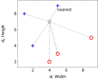
If we set \(k=1\) for the kNN algorithm, we will use only \(1\) nearest neighbor in prediction. The instance at \((5,9)\), which belongs to the standing class, has a distance from the test instance:
\[\begin{aligned} D[(4,7),(5,9)] & = & \sqrt{(4-5)^2 + (7-9)^2} \\ & = & \sqrt{5} \end{aligned}\]
This turns out to be the nearest in terms of Euclidean distance and the test instance will be predicted standing (positive) as well.
If we change \(k=3\), the \(3\) nearest neighbors will all be positive (\(+\)) instances and the prediction for the above test instance will remain positive.
For a different test instance, the \(k\) nearest neighbors might have conflicting answers. For binary classification, one strategy is to pick an odd number for \(k\) and let the nearest neighbors vote for the final prediction.
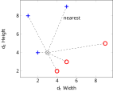
Figure 7.2 shows another test instance at \((3,4)\). With \(k=3\), it turns out that the three nearest neighbors include \(1\) positive and \(2\) negatives. Using a majority vote strategy, the test instance will be mistakenly classified into the negative (lying) class.
Two observations on the misclassification. First, the selection of \(k\) does have an impact on the classification result. This is especially true when training instances are sparse. With \(k=1\), the method relies on one single instance for each test and is hardly robust. A larger \(k\) can reduce the likelihood of predicting with atypical neighbors but it introduces noise, e.g. instances from across the class boundary as illustrated in Figure 7.2. Finding the optimal \(k\) may require experimentation with data.
Second, more important, a lazy learner such as kNN does not have a general function (model) to represent a concept of learning. It purely relies on individual training instances for predictions and has no generalizability. Its success or failure depends on where the test instance hit and how training data distribute around it. This is analogous to a lazy student who memorizes everything without understanding – she will not be able to answer a question for which no similar examples have been provided in the materials.
7.1.2 Other Distance Metrics
Euclidean distance is a special case of a category of distance metrics known as the Minkowski distance, which is defined as:
\[\begin{aligned} MD(u, v) & = & \Big(\sum_{i=1}^{m} |u_i - v_i|^p\Big)^{1/p} \end{aligned}\]
where \(p \ge 1\) and \(m\) is the number of dimensions. When \(p=2\), this is the Euclidean distance. When \(p=1\), it becomes the Manhattan distance:
\[\begin{aligned} MD_1(u, v) & = & \sum_{i=1}^{m} |u_i - v_i| \end{aligned}\]
which is similar to counting the number of blocks in a city grid.
Another metric is similar to (but not exactly) Minkowski distance with \(p=0\):
\[\begin{aligned} MD_0(u, v) & = & \sum_{i=1}^{m} (u_i - v_i)^0 \\ & = & \sum_{u_i \ne v_i} 1 \end{aligned}\]
which counts the number of dimensions where there is a difference and is often referred to as edit distance. This is equivalent to treating every dimension as a binary variable and the overall distance is the amount of change in the bits.
7.2 Linear Classifiers
As we observed, a lazy learner such as the k Nearest Neighbors (kNN) does not actually learn and build a model (function) that can be generalized. Although kNN has decent performances in many applications, it suffers in domains where, for example, test data appear on a different scale from that of training data.
If we assume the classes can be separated by a function (model) with certain parameters, then building the model requires identification of those parameters from training data. Surely there are way too many different functional forms one can choose the model from. We start with the simplest, a linear function.
With the shapes data in Figure 7.1, there are two variables \(width\) (\(v_1\) for the \(x\) axis) and \(height\) (\(v_2\) for \(y\) axis). \(y\) as a linear function of \(x\) can be written as \(f(x) = a + b x\) or \(a + b x - y = 0\), with two parameters \(a\) and \(b\) for two variables.
To make it extendable, We can rewrite this two-variable linear equation as:
\[\begin{aligned} w_0 + w_1 v_1 + w_2 v_2 = 0 \end{aligned}\]
where the \(w\) parameters (instead of \(a\) and \(b\)) are to be estimated. When there are more variables (dimensions), the function can be extended to:
\[\begin{aligned} 0 & = & w_0 + w_1 v_1 + w_2 v_2 + ... + w_m v_m \\ & = & w_0 + \sum_{i=1}^{m} w_i v_i \end{aligned}\]
where \(m\) is the number of variables (dimensions).
With \(m=2\) for the shapes data, how do we estimate the parameters \(w_0\), \(w_1\), and \(w_2\) in Equation [eq-bin-lin2] to linearly separate the two classes standing vs. lying? Note that a linear equation in a 2-dimensional space is a straight line. It is a plane (flat surface)) in a 3-dimensional space and a hyperplane in a higher-dimensional space.1 We will discuss several approaches of the linear model.
7.2.1 Between Centroids
We start with finding the centroid for instances in each class. A centroid is the center of the mass for a group of objects and can be computed as the average of values on each dimension. The \(j^{th}\) dimension of the centroid for class \(c\) is computed by:
\[\begin{aligned} \mu_{j}(c) & = & \frac{\sum_{i=1}^{n_c} v_{ij}}{n_c} \end{aligned}\]
where \(v_{ij}\) is the value of the \(j^{th}\) dimension of the \(i^{th}\) instance in class \(c\). Following this equation, the centroids for the positive (standing) and negative (lying) classes can be obtained:
\[\begin{aligned} \mu(\oplus) & = & \big( \mu_1(\oplus), \mu_2(\oplus) \big) \\ & = & \big( \frac{5+2+1}{3}, \frac{9+4+8}{3} \big) \\ & = & \big( \frac{8}{3}, 7 \big) \\ \mu(\ominus) & = & \big( \frac{4+5+9}{3}, \frac{2+3+5}{3} \big) \\ & = & \big( 6, \frac{10}{3} \big) \end{aligned}\]
Figure 7.3 shows the two centroids and a dashed line with an arrowhead connecting them. The arrow represents a vector in the direction \(\vec{\mu} = (6-\frac{8}{3}, \frac{10}{3} - 7) = (\frac{10}{3}, - \frac{11}{3})\), whereas the middle of the dashed line is \(\bar{\mu} = (\frac{13}{3}, \frac{31}{6})\).
Now if we can find a linear equation, i.e. another straight line, that: 1) passes through the middle of the dashed line (equal to each centroid), and 2) is perpendicular to the dashed line, then any point on the linear equation (line) should have an equal distance from both centroid. In this case, the line can serve as the boundary between the two classes.
Now, identifying the linear equation turns out to be very straightforward. For any point on the line \((v_1, v_2)\), it can be seen as a vector originated from the midle point \(\bar{\mu} = (\frac{13}{3}, - \frac{31}{6})\):
\[\begin{aligned} \vec{v} & = & (v_1 - \frac{13}{3}, v_2 - \frac{31}{6}) \end{aligned}\]
For the vector to be perpendicular to the dashed vector \(\vec{\mu}\), their dot product should be \(0\). That is:
\[\begin{aligned} \vec{v} \cdot \vec{\mu} & = & \frac{10}{3} (v_1 - \frac{13}{3}) - \frac{11}{3} (v_2 - \frac{31}{6}) \\ & = & 0 \end{aligned}\]
which is:
\[\begin{aligned} -1 - \frac{20}{27} v_1 + \frac{22}{27} v_2 = 0 \end{aligned}\]
or:
\[\begin{aligned} v_2 = 1.227 + 0.909 v_1 \end{aligned}\]
Comparing this to Equation [eq-bin-lin2], we have identified the parameters \(w_0=-1\), \(w_1=-\frac{20}{27}\), and \(w_2=\frac{22}{27}\) for the linear classification function. This is the solid straight line separating the two classes (centroids) in Figure 7.3.
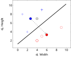
With the identified linear function \(f(v) = 1 + \frac{20}{27} v_1 - \frac{22}{27} v_2\), one can plug in values of a test instance and make a prediction. If the result is positive, it will predict positive (standing); otherwise, it will predict negative (lying). For example, given a test instance at \((4,7)\) (\(\otimes\) on Figure 7.3), we can put the values in the linear function and get:
\[\begin{aligned} f(4,7) & = & -1 - \frac{20}{27} \times 4 + \frac{22}{27} \times 7 \\ & = & \frac{47}{27} \\ & > & 0 \end{aligned}\]
The final result is positive – the same positivity with the positive class centroid – and hence the test instance \(\otimes\) will be classified into the standing class.
Theoretically, we understand that the concept of standing is on the relation of \(height - width >0\) or, in terms of the linear function, \(0 - v_1 + v_2 > 0\). The identified equation is a rough approximation of this theoretical function. The model assumption about a linear separation holds true in this example. But how precise we can establish the exact linear function depends largely on the training data. The data distribution influences the identification of related parameters.
In particular, the centroid approach is greatly impacted by the density of the training set and where most data instances are. For example, having more data instances with smaller width and height in the negative class change its centroid, which will, in turn, lead to a very different linear function, illustrated in Figure 7.4 (compare to Figure 7.3).
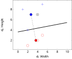
The centroid-based approach to linear classification is greatly influenced by all data points in the training set and how they are distributed. The basic assumption underlying the above modeling is that the two classes are of the same size roughly and the "border" lies halfway between their centers. This is often untrue and its performance suffers.
7.2.2 Support Vector Machines
Imagine settling the border between two countries, for example, the United States and Canada. It does not matter where the centers of the two countries are. Even if the two countries are of the same size, the border is rarely halfway between the centers.
Rather, it is much more relevant to find out where cities, landmarks, and populations are on the border. For U.S. and Canada, cities such as Seattle vs. Detroit vs. Vancouver, Detroit vs. Toronto help define their border.
For classification, it matters not where the centroids are but where the borderline data are. The Support Vector Machines, or SVM, is a method focused on the border populations and draws the "border" based on the so-called support vectors, data points that are located on the boundary and together form the border.
We start by connecting a number of data points within the same class to construct a linear function, i.e. a line on a 2-dimensional space, a plane for 3 dimensions, and a hyperplane for higher dimensions. On the 2-dimensional shapes data, this means using any two points in each class to form a straight line that, when used as the linear classification function, satisfies two conditions: 1) all data points in the same class fall on one size of the linear function, and 2) most if not all data points of the other class reside on the other side of the line. In other words, if a line is drawn in the positive (standing class), then 1) data in it will test all positive (or all negative), and 2) data in the other class will test the opposite, negative (or conversely positive).
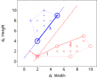
Figure 7.5 illustrates the idea with the shapes data. 2 Pairwise lines drawn in the figure all satisfy the \(1^{st}\) condition and collectively form a convex hull for each class. However, not all lines meet the \(2^{nd}\) condition. In fact, only the lines marked \(1\), \(2\), and \(3\) meet both conditions. They are candidate support vectors.
For each of the three candidate lines, we can draw a line perpendicular to it from any point in the other class. From this process, we can find out the margin between that candidate support vector line and the other class (convex hull), which is where the boundary can be defined. For example, in Figure 7.5, the two dotted lines show the margin between line \(\#3\) and the negative class.
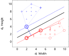
Yet a greater margin – in fact the greatest margin of all – can be found between line \(\#1\) and point \((2,4)\) in the positive class, as the two dotted lines in Figure 7.6 show. The greatest margin will be chosen as the decision boundary, which is defined by a few data points known as the support vectors. As shown as circled data points in Figure 7.6, support vectors are those that determine the maximum margin between the two convex hulls of the two classes.
With this, it is now easy to identify the linear equation in the margin to separate the two classes. In Figure 7.6, for example, the solid line at \(v_2 = 1.1 + 0.667 v_1\) can be used as the linear classifier. One can certainly use the linear functions on the support vectors for classification as well, e.g. to predict one class vs. another if a test instance is within the support vector boundary or to estimate a probability if it is on the margin.
Note that with the shapes data example, we only have to deal with two dimensions and any linear equation is a straight line. With a higher dimensionality, the process remains the same mathematically but a linear function becomes a plane or hyperplane. On three dimensions, for example, three data points should be connected to construct a linear equation (plane) to identify the convex hulls and support vectors. Chapter has details on the mathematics for SVM.
7.2.3 Perceptron: Toward a Neural Network
The linear function \(f(v)=w_0 + w_1 v_1 + w_2 v_2\) can be visualized as a perceptron in Figure 7.7, where the node at \(\sum\) computes the weighted sum of input variables. Obviously, this can be extended to include any number of variables \(m\) for which \(f(v)=\sum_{i=1}^{m} w_i v_i\).
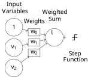
A perceptron is a simple, one-layer neural network – besides the input variables, there is only one layer of nodes (only one \(\sum\) node) in the model, as shown in Figure 7.7. The final output of the perceptron is binary \(0\) or \(1\) by using a step function, which simply converts values higher than a threshold to \(1\) and those lower to \(0\). For example, one can use \(0\) as the threshold for a step function \(f(s)\):
\[\begin{aligned} f(s) & = & \begin{cases} 1 & \text{if } s>0\\ 0 & \text{otherwise} \end{cases} \end{aligned}\]
which is visualized in Figure 7.8.
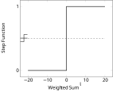
Before training, the weights are unknown and should be initialized with certain values, e.g. all \(0\). For each training instance, its values \(v_1\) and \(v_2\) will be fed into the input layer and multiplied with their weights \(w_1\) and \(w_2\) respectively.
Note that in Figure 7.7, the input with weight \(w_0\) is always \(1\) for every training instance. This is referred to as the bias, which adds the constant \(w_0\) to the linear function. Once every input is multiplied by its weight, the output computes the sum of the weighted values.
For the shapes data, we can decide that the model will predict positive (standing) if the output is greater than \(0\); negative (lying) if otherwise. During training, if a correct prediction is made, the model will have no need to adjust its weights (for now) and will simply move to the next training instance.
If a misclassification occurs, however, the model will have to adjust its weights so it can potentially make more correct predictions in the future. When the model predicts negative on an actual positive instance, the weights should be adjusted so the overall output (sum) will move toward the positive side; and vice versa.
For example, for a specific shape instance with \(v_1\) (width) and \(v_2\) (height) values, which is \((1, v_1, v_2)\) with the bias input included. Suppose \(v_2>v_1\) and this instance actually belongs to the positive (standing) class. Now if the model finds out \(w_0 + w_1 v_1 + w_2 v_2 < 0\) and predicts negative (lying). We will add the input values to their current weights:
\[\begin{aligned} w'_0 & \gets & w_0 + 1 \\ w'_1 & \gets & w_1 + v_1 \\ w'_2 & \gets & w_2 + v_2 \end{aligned}\]
where \(w'\) is the updated weight. Because \(v_2>v_1\), the weight for height \(w_2\) will increase more than the weight for width \(w_1\).
Conversely, for a training instance with \(v_1>v_2\) that actually belongs to the negative (lying) class, if it is misclassified as positive, then the current weights will be reduced by the input values:
\[\begin{aligned} w'_0 & \gets & w_0 - 1 \\ w'_1 & \gets & w_1 - v_1 \\ w'_2 & \gets & w_2 - v_2 \end{aligned}\]
Now that \(v_1>v_2\), the weight for width \(w_1\) will be reduced more than \(w_2\). The training continues for a number of iterations or until the weights stabilize. With more training instances and misclassifications, the weights will be adjusted further, leading to relatively a greater (positive) value of \(w_2\) and a smaller (negative) value of \(w_1\).
Theoretically, we know that the classification function for standing vs. lying should be in the form of \(f(v) = 0 - v_1 + v_2\), with \(w_1\) and \(w_2\) having opposite signs. Overall, the adjustment of weights discussed above is moving in the correct direction. As for the bias, it will simply be adjusted back and forth with positive and negative misclassifications. For the shapes data, \(w_0\) will be more or less canceled out and its absolute value will become much smaller than those of \(w_1\) and \(w_2\).
The perception model is learning by mistakes, as it updates the weights only when there is misclassification. For classes that are linearly separable, the updating strategy is guaranteed to converge on a set of weights.
7.3 Non-Linear Models
Many machine learning problems in the real world cannot be solved by a linear equation. Consider the car evaluation data in Table 1.2.
| Buying Price | Maintenance Cost | Evaluation |
|---|---|---|
| 2 | 2 | Acceptable |
| 2 | 1 | Acceptable |
| 1 | 2 | Acceptable |
| 1 | 1 | Acceptable |
| 4 | 4 | Unacceptable |
| 4 | 3 | Unacceptable |
| 4 | 2 | Unacceptable |
| 4 | 1 | Unacceptable |
| 3 | 4 | Unacceptable |
| 3 | 3 | Unacceptable |
| 3 | 2 | Unacceptable |
| 3 | 1 | Unacceptable |
| 2 | 4 | Unacceptable |
| 2 | 3 | Unacceptable |
| 1 | 4 | Unacceptable |
| 1 | 3 | Unacceptable |
In the data, the concept is about whether a car is acceptable or unacceptable given its buying price and maintenance cost.3 The price (cost) variables are on an ordinal scale: low, medium, high, and very high, which we convert into an equal-interval numeric scale from \(1\) (low) to \(4\) (very high).
While it is possible to include other variables such as the number of doors and safety features, we will focus on the cost factors in the discussion here. Figure 7.9 plots maintenance cost vs. buying price, with the \(+\) indicating an acceptable car and \(\circ\) unacceptable. The two classes appear not separable linearly on the two-dimensional space – that is, there is no straight line that can be drawn to separate the two.
Again, if one can introduce other predictor variables and the classes might be separable linearly on a higher-dimensional space. But even with the only two variables, namely maintenance cost and buying price, the plot seems to suggest that a car will be evaluated unacceptable with either a high buying price or a high maintenance cost.
Perhaps one can draw two straight lines, one to separate the classes on the price dimension and the other on the maintenance cost. However, this is no longer one linear equation of the two variables that can fit in with a linear model. Alternatively, we can still draw a curve (a non-linear function) to separate them. For example, as shown as the dashed line in Figure 7.9, a circular function such as \((v_1-1)^2 + (v_2 -1)^2 = 3\) can set the boundary between the two classes. The question is: how can we identify such as a non-linear function from the training data?
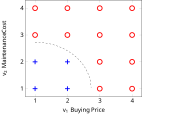
7.3.1 Kernel SVM
We have discussed the support vector machines, which, in its original form, is a linear model. How can we apply SVM to non-linear data? Now instead of finding out a non-linear function, we can think about how the data can be transformed in such a way that they are linearly separable.
In particular, we can map the data onto a higher dimensional space with richer features, where a linear classifier is applicable. Now that we do not have additional variables, how can we create a higher-dimensional space? The basic idea is to find non-linear combinations of existing variables, via a so-called kernel function. We will have an in-depth discussion of kernel functions in Chapter . But in the nutshell, a kernel function can be computed by a dot product with expanded features and makes it extremely efficient to identify the decision hyperplane in the higher dimensional space.
Among families of kernel functions, a polynomial function is often used. For example, we may consider a quadratic transformation with the car evaluation data. Given the two existing variables, any data instance with \(v = (v_1, v_2)\) (a two-dimensional vector) can be expanded onto a vector with more dimensions:
\[\begin{aligned} \phi(v) & = & (v_1^2, v_2^2, \sqrt{2} v_1 v_2) \end{aligned}\]
Note that the quadratic expansion should result in \(5\) dimensions including the original dimensions of \(v_1\) and \(v_2\). We focus on the \(3\) additional features and thus limit the number of dimensions to three, which can be visualized.
With the \(v_1^2\) and \(v_2^2\) transformation, data in the two classes already appear to be linearly separable. As shown in Figure 7.10, the solid line at \(v_1+v_2-9=0\) can separate the data we have so far. However, this does not necessarily represent the general idea of car evaluation and new data may violate the rule (cross the decision boundary).
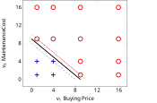
Whether a car is acceptable or not may depend on some form of interaction between the buying price and maintenance cost. With the quadratic expansion, the additional dimension of \(\sqrt{2} v_1 v_2\) can be seen as an interaction variable in the form of multiplication.
When all three expanded features are considered, the data are mapped to a three-dimensional space shown in Figure 7.11, where they may be separated linearly. Of all linear equations (planes) formed by any three points in each class, we have identified two planes closest to their opposite classes.
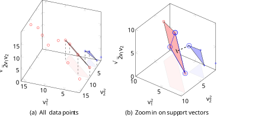
Figure 7.11 (a) shows all data points in the expanded dimensional space with quadratic mapping. The two planes formed by data points are the closest to the opposite class, which are candidate support vectors. Shadows of the planes are projected to the "ground" (i.e. \(v_2^2\) vs. \(v_1^2\) dimensions) for easier reading of related data points.
Figure 7.11 (b) zooms in on the planes formed by candidate support vectors in the three-dimensional space, where a decision boundary can be identified to maximize the margin between the two classes (convex hulls). The dashed line connects the closest points of data in the two classes (convex hulls), by drawing a line from the circled positive point perpendicular to the plane formed by three circled negative points. The four circled points (one positive and three negative) are the identified support vectors, based on which the margin is established and classification can be performed.
Besides polynomial kernels, other popular kernel functions for SVM include radial basis and string kernels. A string kernel, for example, operates directly on symbol sequences without vectorized features and is useful in applications such as text classification and gene sequence analysis.
7.3.2 Multi-Layer Neural Networks
We know the single perceptron can only be applied to linearly separable data. The car evaluation data, as shown in Figure 7.9, cannot be separated by one linear function. However, with a step function, one can transform the data into something linearly separable. Specifically, for a value \(s\) on the \(v_1\) or \(v_2\) dimension, we use the following step function:
\[\begin{aligned} f(s) & = & \begin{cases} 1 & \text{if } s>2.5\\ 0 & \text{otherwise} \end{cases} \end{aligned}\]
So it returns \(1\) for a value above \(2.5\), and \(0\) for a value below. Applying the step function to both \(v_1\) (buying price) and \(v_2\) (maintenance cost), we have transformed data in Figure 7.12. All positive (acceptable) data have been mapped to the \((0,0)\) point whereas the negative (unacceptable) ones are at \((0,1)\), \((1,1)\), and \((1,0)\). As the solid line in Figure 7.12 shows, the transformed data are now linearly separable.
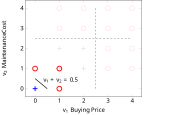
This non-linear classification with step function transformation can be represented with a multi-layer neural network. As shown in Figure 7.13, each of the input variables \(v_1\) and \(v_2\) is normalized by a step function and then multiplied by \(-1\) before feeding into the final output, which is combined with the bias weighted \(0.5\). This is equivalent to \(0.5 \times 1 -1\times f(v_1) - 1\times f(v_2)\), where \(f\) is the step function for \(v_1\) and \(v_2\) values.
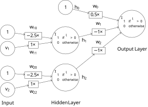
For example, with data point \((2,2)\), the step function will convert them into \((0,0)\). With the bias \(0.5\times1\), the weighted sum is \(0.5\times1 - 1\times 0 - 1\times 0 = 0.5\) and it will be classified positive (acceptable). With data point \((3,1)\), it is transformed into \((1,0)\) by the step function and the final weighted sum is \(0.5\times1 - 1\times 1 - 1\times 0 = -0.5\), which will be classified negative (unacceptable).
Using the multi-layer neural network, based on the additional hidden layer with step functions between the input and final output, it is now possible to establish a non-linear model such as the one in Figure 7.13.
But the question remains – how can the weights of the model, together with the step function, be identified properly? While it is tempting to use a similar strategy as with the single perceptron, the non-linearity of the model rules out such a linear strategy for weight adjustment. That is, simply adding or subtracting weights (linear combinations) does not help when the model is non-linear.
Can we adjust the weights in a non-linear manner during training? In other words, can we adjust the weights based on how much each variable contributes to the final output via the hidden layer? The general optimization technique called gradient descent makes it possible to find optimal values (weights) by searching in the derivatives of related functions. However, a step function, as illustrated in Figure 7.8, has a sudden jump (not smooth transition) between \(0\) and \(1\) and is not differentiable.
If we are to retain the idea of a step function, can we develop one that functions in the like manner and yet smooth and differentiable? A candidate is the sigmoid function, which is defined by:
\[\begin{aligned} f(v) & = & \frac{1}{1+e^{-v}} \end{aligned}\]
for a value \(v\). Figure 7.14 shows the functional curve of sigmoid, which transforms the weighted sum of a node to a value approaching \(0\) or \(1\). The threshold is \(0\) by default but we can use any threshold for the transformation. For example, with a threshold of \(5\), the sigmoid function becomes:
\[\begin{aligned} f(v) & = & \frac{1}{1+e^{-(v-5)}} \end{aligned}\]
which shifts the functional curve on the \(x\) coordinates by \(+5\) (dashed line in Figure 7.14). \(v-5 = 1\times v + (-5)\times 1\) is equivalent to the weighted sum of variable \(v\) (with weight \(w=1\)) and bias \(1\) (with weight \(w_0=-5\)). It can be generalized as a linear function of any number of input variables with bias in the form of \(\sum = w_0 + \sum_i w_i v_i\).
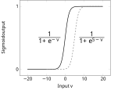
Now if we replace the step function with the sigmoid function in Figure 7.13, we have the multi-layer neural network in Figure 7.15, in which each layer (node) is differentiable and the weight can be learned by gradient descent.
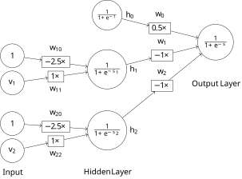
The weighted sum for each hidden node \(i\) can be computed by:
\[\begin{aligned} s_i & = & \sum_{j=0}^{m} w_{ij} v_j \end{aligned}\]
where \(m\) is the number of variables and \(v_0\) is the bias, which is always \(1\). Given the sigmoid function \(f\), the output of each node in the hidden layer is:
\[\begin{aligned} h_i & = & f(s_i) \\ & = & f(\sum_{j=0}^{m} w_{ij} v_j) \end{aligned}\]
In Figure 7.15, this can be written as:
\[\begin{aligned} h_1 & = & f(\sum_{j=0}^{m} w_{1j} v_j) \\ & = & f(w_{10} v_0 + w_{11} v_1 + w_{12} v_2) \\ & = & f(-2.5\times1 + 1\times v_2 + 0\times v_2) \\ h_2 & = & f(\sum_{j=0}^{m} w_{2j} v_j) \\ & = & f(w_{20} v_0 + w_{21} v_1 + w_{22} v_1) \\ & = & f(-2.5\times1 + 0\times v_2 + 1\times v_2) \end{aligned}\]
The final output, predicted value \(\hat{y}\), is the sigmoid of the weighted sum of values from the hidden layer:
\[\begin{aligned} \hat{y} & = & f(s) \\ & = & f(\sum_{i=0}^{m} w_i h_i) \\ & = & f\Big(\sum_{i=0}^{m} w_i f\big(\sum_{j=0}^{m} w_{ij} v_j\big)\Big) \end{aligned}\]
which, for the model in Figure 7.15, can be computed by:
\[\begin{aligned} \hat{y} & = & f(w_0 h_0 + w_1 h_1 + w_2 h_2) \\ & = & f\Big(w_0 f(1) \\ & & + w_1 f\big(w_{10} + w_{11} v_1 + w_{12} v_2\big) \\ & & + w_2 f\big(w_{20} + w_{21} v_1 + w_{22} v_2\big)\Big) \end{aligned}\]
Let \(y\) be the actual outcome (class \(0\) or \(1\)) for input from the hidden layer \(h\). If we define the error \(E\) as a squared function:
\[\begin{aligned} E(h) & = & \frac{1}{2} (y - \hat{y})^2 \end{aligned}\]
For a prediction based on the sigmoid function \(f\), it can be shown that the differential with respect to a weight \(w_i\) to the output layer is:
\[\begin{aligned} \frac{dE(h)}{dw_i} & = & \big( f(s) - y \big) f'(s) f(s_i) \\ & = & \big( f(s) - y \big) f'(s) h_i \end{aligned}\]
where \(s\) is the weighted sum at the output layer and \(f'(s)\) is the derivative of the sigmoid function \(f(s)\), which is as simple as \(f(s)(1-f(s))\). This gives the differentials needed to optimize \(w_i\) weights from the hidden layer to the output, i.e. \(w_0\), \(w_1\), and \(w_2\) weights in Figure 7.15.
Now that values in the hidden layer \(h\) are based on weighted sums of the input layer, we also need to optimize \(w_{ij}\) weights connecting the input to the hidden layer. Given input values \(v\), the differential with respect to a weight \(w_{ij}\) to hidden node \(h_i\) can be computed by:
\[\begin{aligned} \frac{dE(v)}{dw_{ij}} & = & \big( f(s) - y \big) f'(s) f'(s_i) v_j \end{aligned}\]
The differentials will be used to update weights to both layers during the training process. In particular, the differential \(\frac{dE(h)}{dw_i}\) in Equation [eq-bin-dwi] will be used to subtract from existing weights of \(w_0\), \(w_1\), and \(w_2\). The differential \(\frac{dE(v)}{dw_{ij}}\) in Equation [eq-bin-dwij] will be used to subtract from existing weights of \(w_{10}\) and \(w_{11}\) for \(h_1\); \(w_{20}\) and \(w_{22}\) for \(h_2\) in Figure 7.15. This approach of revising weights to the two layers can thought of as propagating differentials of squared errors backward in the feed-forward neural network, and is referred to as backpropagation.
To understand how backpropagation actually operates, let’s walk through the training process with the first data instance in Table 1.3.
| Buying Price | Maintenance Cost | Evaluation |
|---|---|---|
| 2 | 2 | 1 |
| .. | .. | .. |
Before training, we don’t know the weights and may initialize them with all \(0\) values. Note that we use \(0\) initial weights for easy demonstration. This is not necessarily the best strategy for initialization.
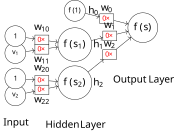
Now with the model and initial weights in Figure 7.16, given the first training instance of \((2,2)\), we can compute:
\[\begin{aligned} h_0 & = & f(1) \\ & = & \frac{1}{1+e^{-1}} \\ & = & 0.731 \\ h_1 & = & f(s_1) \\ & = & f(0\times1 + 0\times2) \\ & = & 0.5 \\ h_2 & = & f(s_2) \\ & = & f(0\times1 + 0\times2) \\ & = & 0.5 \end{aligned}\]
The final prediction \(\hat{y}\) is computed by:
\[\begin{aligned} f(s) & = & f(0\times0.731 + 0\times0.5 + 0\times0.5) \\ & = & f(0) \\ & = & 0.5 \end{aligned}\]
We get:
\[\begin{aligned} \big( f(s) - y \big) f'(s) & = & \big( f(s) - y \big) f(s) \big( 1 - f(s)\big) \\ & = & (0.5 - 1) \times 0.5 \times (1 - 0.5) \\ & = & - 0.125 \end{aligned}\]
With the actual class being \(1\), we can compute the differentials. For each \(w_i\) weight leading to the output layer:
\[\begin{aligned} \frac{dE(h)}{dw_0} & = & \big( f(s) - y \big) f'(s) h_0 \\ & = & -0.125 \times h_0 \\ & = & -0.125 \times 0.73 \\ & = & -0.0914 \\ \frac{dE(h)}{dw_1} & = & -0.125 \times 0.5 \\ & = & -0.0625 \\ \frac{dE(h)}{dw_2} & = & -0.0625 \\ \end{aligned}\]
Subtracting these (negative) values from their current weights respectively, we obtain the new weights \(w_0=0.0914\), \(w_1=0.0625\), and \(w_2 = 0.625\).
Now we can further back-propagate the error to the \(w_{ij}\) weights from the input layer:
\[\begin{aligned} \frac{dE(v)}{dw_{10}} & = & \big( f(s) - y \big) f'(s) f'(s_1) v_0 \\ & = & -0.125 \times f(s_1) (1 - f(s_1)) v_0 \\ & = & -0.125 \times 0.5 \times (1-0.5) \times 1 \\ & = & -0.0313 \\ \frac{dE(v)}{dw_{11}} & = & \big( f(s) - y \big) f'(s) f'(s_1) v_1 \\ & = & -0.125 \times 0.5 \times (1-0.5) \times 2 \\ & = & -0.0625 \\ \frac{dE(v)}{dw_{20}} & = & -0.0313 \\ \frac{dE(v)}{dw_{22}} & = & -0.0625 \end{aligned}\]
Subtracting these from current \(0\) values, we obtain new weights for of all \(w_{ij}\), namely \(w_{10}=0.0313\) and \(w_{11}=0.0625\) to hidden node \(h_1\), and \(w_{20}=0.0313\) and \(w_{22}=0.0625\) for hidden node \(h_2\).
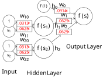
Figure 7.17 shows the model with updated weights after training by the first instance \((2,2)\) with a known class label \(1\). We can continue to train the model with additional data instances in Table 1.3. This can be repeated with the same data until weights are stabilized and the error is reduced to a certain level.
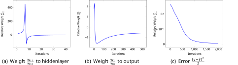
Figure 7.18 shows relative weights and error over time, via iterations of repeated training with data in Table 1.3. Note that in linear equations, absolute values of related weights (coefficients) are not important. Rather, it is their relative weight to one another that matters. Hence, we present weights relative to \(w_0\), i.e. divided by the bias weight.
Overall, the figures show the weights and error all appear to converge. However, they seem to differ in the number of iterations needed for their convergence. In Figure 7.18 (a), the relative weight of \(w_{11}\) (the weight of \(v_1\) to the hidden node \(h_1\)) fluctuates a lot in the first \(10\) iterations but stabilizes quickly after a few dozen iterations. In Figure 7.18 (b), \(w_1\) – the weight from the hidden node \(h_1\) to the final output – appears to take hundreds of iterations to converge. The squared error, as shown in Figure 7.18 (c), takes even even more iterations to be minimized.
In the end, we obtain the weights in Table [tab-bin-car_nn_result] with minimized squared error.
| Weights | \(w_0\) | \(w_1\) | \(w_2\) | \(w_{10}\) | \(w_{11}\) | \(w_{20}\) | \(w_{22}\) | Error |
|---|---|---|---|---|---|---|---|---|
| Absolute | -18.4 | 9.47 | 9.44 | 7.35 | -2.93 | 7.43 | -2.96 | 0.0027 |
| Relative | -1 | 0.52 | 0.52 | 1 | -0.40 | 1 | -0.40 | 0.0027 |
| Relative | -1.92 | 1 | 1 | 2.5 | -1 | 2.5 | -1 | 0.0027 |
The result of Table [tab-bin-car_nn_result] can be represented as the final (converged) model in Figure 7.19, which is highly similar to the one in Figure 7.15. For example, the weighted sum for hidden node \(h_1\) is \(2.5 - v_1\) in the model here, which is simply the negative of what is in Figure 7.15, where the sum is \(v_1 - 2.5\). We observe the same with the hidden node \(h_2\). This leads to the different signs of \(w_1, w_2\) vs. \(w_0\) to the output layer.
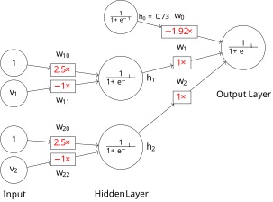
Figure 7.20 visualizes how the model transforms the original data into something separable. A sigmoid function with a weighted sum of \(2.5 - v\) (for both \(v_1\) and \(v_2\)) converts the original data (\(+\) and \(\circ\) in faded colors) to values close to \(0\) (if \(v>2.5\)) and \(1\) values (if \(v<2.5\)).
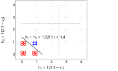
Given the limited training data we have, there are many non-linear solutions to the classification problem. In the end, we obtain the model in Figure 7.19 which is different from what we proposed in Figure 7.15. Both models will make perfect classifications on the training data presented in Table 1.3. However, a model thus obtained has not necessarily found the global optimal. In fact, the back-propagation mechanism via gradient descent can converge to a local optimum, which depends on many factors such as the starting point (initial values) and the sequence of training data. The learning rate also impacts the convergence of weights and, occasionally, may also influence where they converge.
A hyperplane in more three dimensions is hard to visualize. Mathematically, it shares the same functional form of Equation [eq-bin-lin] and is a natural extension of the lower-dimensional representation.↩︎
Please note additional data points than previously discussed in the illustration.↩︎
The tiny data set was inspired by the UCI’s Car Evaluation collection. However, this simplified version is intended for demonstration only and does not represent the actual data in the UCI repository.↩︎